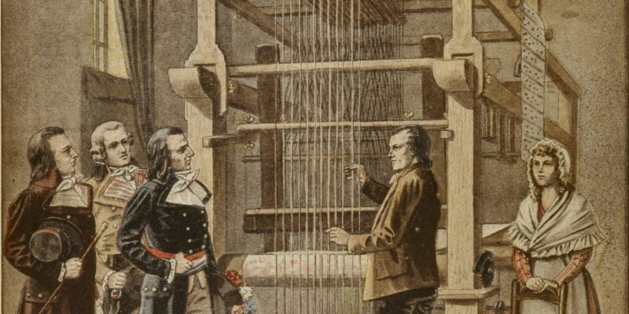
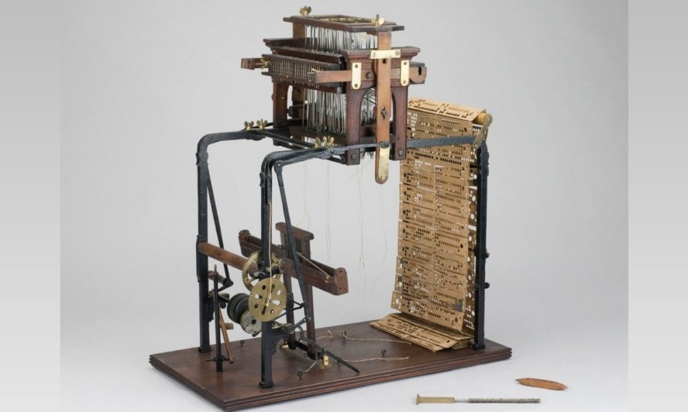

Las computadoras son las máquinas de cálculo más avanzadas y eficientes inventadas por el ser humano. Están dotadas de una gran capacidad para realizar diversas operaciones simultáneamente, con autonomía y de velocidad. Además, permiten llevar a cabo dinámicas de trabajo virtuales y digitales que nunca antes en la historia habían sido posibles.
La historia de la computadora tiene largos antecedentes que se remontan a las primeras reglas de cálculo y a las primeras máquinas diseñadas para facilitar al ser humano la tarea de realizar operaciones aritméticasl. El ábaco, por ejemplo, fue un importante adelanto en la materia, creado alrededor del año 4.000 a.C.

Posteriormente, se crearon inventos más sofisticados, como la máquina de Blaise Pascal (conocida como máquina de Pascal o Pascalina), creada en 1642. Consistía en una serie de engranajes que permitían realizar operaciones aritméticas mecánicamente. Al mejorarla, en 1671, Gottfried Leibniz dio inicio a las primeras calculadoras, antecesoras cercanas del computadores.

Los intentos del ser humano por automatizar continuaron desde entonces: Joseph Marie Jacquard inventó en 1802 un sistema de tarjetas perforadas para intentar automatizar sus telares. Este sistema es considerado la primera máquina programable de la historia.

En 1822 el inglés Charles Babbage empleó dichas tarjetas para crear una máquina de cálculo diferencial.Doce años después, es decir en 1834, Babbage logró innovar su máquina para que sea analítica, capaz de realizar las cuatro operaciones aritméticas y de almacenar números en una memoria (hasta 1.000 números de 50 dígitos). Por este motivo, a Babbage se le considera el padre de la computación, ya que esta máquina representa un salto hacia el mundo de la informática actual. Este se mantiene en constante desarrollo e innovación.

Alan Turing, creó una máquina capaz de calcular cualquier cosa, a la que llamó “máquina universal” o “máquina de Turing”. Las ideas que sirvieron para construirla fueron las mismas que luego dieron nacimiento al primer computador.